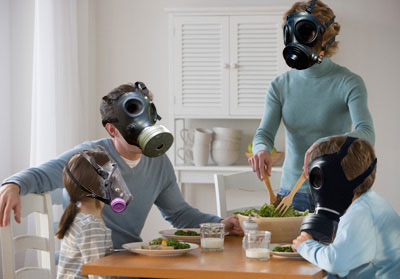
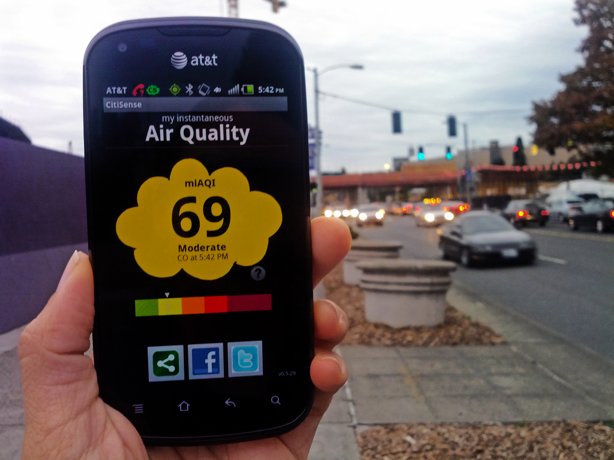

Air pollutants emanate from a multitude of sources, altering the atmospheric composition and impacting the natural environment. Their concentration in the air is influenced not only by emission volumes but also by atmospheric processes that can either absorb or disperse these pollutants. This spatial and temporal variation in air pollution is influenced by meteorological and topographical factors, leading to dynamic changes in pollution patterns across different locations and times.

Sources of air pollutants encompass vehicles, industries, domestic activities, and natural phenomena. The pervasive presence of these pollutants in the ambient air poses significant health and property risks to the population.
Efficient ambient air quality monitoring necessitates the measurement of various pollutants at numerous locations nationwide. This network design entails meticulous consideration of factors such as pollutant selection, site selection, sampling frequency and duration, sampling techniques, infrastructure, manpower, and operational costs.
Key pollutants targeted for monitoring include Suspended Particulate Matter (SPM), Respirable Suspended Particulate Matter (RSPM), Sulphur dioxide (SO2), Oxides of Nitrogen (NOx), and Carbon Monoxide (CO), among others.
Selection of monitoring sites typically prioritizes areas with high traffic density, industrial activity, dense human habitation, significant emission sources, public grievances, and land use patterns.
Overall, an effective monitoring network is tailored to the prevailing pollution sources and pollutants, utilizing advanced air quality monitoring sensors and products to ensure accurate and comprehensive data collection.
Our comprehensive ambient air quality monitoring station offers an extensive array of sensor-based analyzer modules capable of detecting a diverse range of particulate and gaseous pollutants, as well as environmental conditions. What sets our system apart is its innovative hybrid design, combining the benefits of sensors and analyzers. Each module is calibrated in situ using Standard Reference Materials, ensuring optimal accuracy and reliability.
With our continuous ambient air quality monitoring system, users can simultaneously track gas concentrations, particulate matter levels, and environmental parameters. The data collected is accessible remotely and in real-time, allowing users to monitor air quality from anywhere using a PC, tablet, or smartphone.
Why Choose Agua Instruments for Air Quality Monitoring?
Exceptional Accuracy
Our air quality monitors are equipped with high-precision sensors that provide accurate and consistent measurements of various air pollutants.
Advanced Data Analytics
Leverage advanced data analytics with our monitoring systems to gain deeper insights into air quality trends and pollutant sources..
Expert Support and Service
Agua Instruments offers dedicated support throughout the lifecycle of your air quality monitoring syste, From initial setup and calibration.
Durability and Reliability
our air monitoring systems are robust and reliable. They are suitable for continuous monitoring in industrial, urban, and residential settings.
Commitment to Innovation
This commitment ensures that you have access to the most effective tools for air quality monitoring and management.
Providing data for environmental research and studies.
Supporting academic and industrial research projects on air pollution and mitigation strategies.

Continuous Emission Monitoring Systems (CEMS) for factories and power plants.
Detection of pollutants such as sulfur dioxide (SO₂), nitrogen oxides (NOₓ), carbon monoxide (CO), and particulate matter (PM).

Monitoring urban air quality in cities to assess pollution levels and public health.
Measurement of common urban pollutants including ozone (O₃), volatile organic compounds (VOCs), and particulate matter (PM₁₀, PM₂.₅).

Ensuring air quality in residential, commercial, and industrial buildings.
Detection of indoor pollutants like carbon dioxide (CO₂), VOCs, and humidity levels..

Deploying mobile units for temporary monitoring in various locations.
Assessing air quality during special events, construction activities, and disaster responses.

Monitoring air quality in agricultural settings to ensure safe working conditions.
Detection of pollutants related to farming activities such as ammonia (NH₃) and pesticides.

Assessing emissions from vehicles and transportation systems.
Monitoring pollution levels around highways, airports, and seaports.

Monitoring air quality in workplaces to protect employee health.
Detection of harmful gases and chemicals in industrial environments.

Engaging communities in monitoring local air quality.
Providing real-time data to inform and empower residents about air quality issues.
| Carbon monoxide | CO | 0-25 PPM |
| Ozone | O3 | 0-0.5 PPM |
| Nitrogen dioxide | NO2 | 0-0.2 PPM |
| Sulphur Dioxide | SO2 | 0-10 PPM |
| Nitric Oxide | NO | 0-0.5 PPM |
| VOC | 0-20 PPM | |
| Hydrogen Sulphide | H2S | 0-10 PPM |
| Carbon Dioxide | CO2 | 0-2000 PPM |
| Particulate Matter | PM1 | PM1 0-200 μg/m3 |
| Particulate Matter | PM2.5 | PM2.5 0 to 2000 μg/m3 |
| Particulate Matter | PM10 | PM10 0 to 5000 μg/m3 |
| TSP | TSP | 0 to 5000 μg/m3 |
| Chemiluminescence | Nitrogen Oxides NO/NO2/NOX |
| UV Photometry | Ozone O3 |
| UV fluorescence | Sulphur Dioxide SO2 and Hydrogen Sulphide (H2S) |
| NDIR gas filter correlation | Carbon Monoxide COBenzene/Toluene/Ethylbenzene/Xylene BTX |
| Nephlometry | Particulate Matter (PM1, PM2.5, PM10 and TSP) |
| Laser light scattering | PM10, PM2.5, simultaneous |